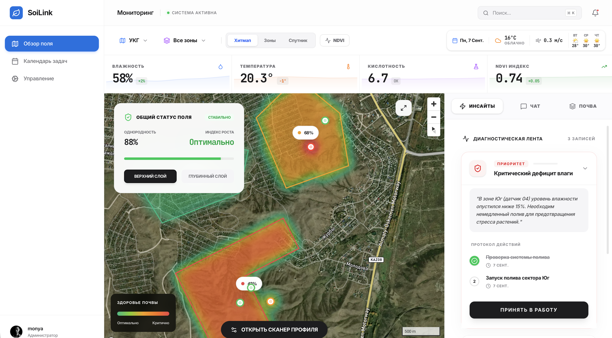
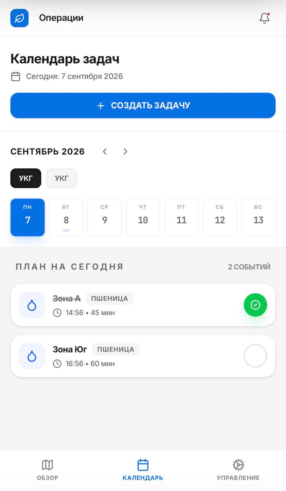

/irrigation
«Влажность в корневой зоне ниже 25%. Запустите полив сектора 3 на 40 минут до полудня».
Результат: ноль перерасхода воды, растения защищены от засухи.
Комплекс IoT-датчиков и AI-аналитика, предотвращающие истощение земель. Экономим воду и удобрения, управляя полем на основе точных данных.
/irrigation
«Влажность в корневой зоне ниже 25%. Запустите полив сектора 3 на 40 минут до полудня».
Результат: ноль перерасхода воды, растения защищены от засухи.
/fertilizer
«Дефицит азота на глубине 30 см. Рекомендовано: аммиачная селитра (30-0-0)».
Результат: точечное внесение удобрений вместо обработки всего поля вслепую.
/alerts
«Риск засоления и вымывания минералов».
Результат: предупреждение деградации почвы за недели до появления внешних признаков.
Тепловая карта влажности, диагностическая лента и план работ. Веб-панель для агронома и мобильное приложение для бригады.


Нам доверяют и с нами сотрудничают
Лаборатория присылает анализ почвы через 7–20 дней. Датчик SoiLink обновляет данные каждые несколько минут.
Три уровня системы работают вместе — от датчика в грунте до рекомендации на экране фермера.
Погружаются в корневую зону, снимают pH, влажность, температуру и состав газов каждые несколько минут.
Фильтрует и хранит телеметрию локально, работает автономно при слабом или отсутствующем интернете.
Предиктивные модели, откалиброванные под региональные типы почв и климат, формируют рекомендации.
Готовый план полевых работ на сегодня — что, где и сколько — прямо в смартфоне.
В Казахстане 90 млн га почв подвержены деградации, а отрасль теряет до $2,4 млрд ежегодно из-за неоптимального управления ресурсами. Мы открываем pre-seed раунд для завершения аппаратной части и проведения первых полевых испытаний.
Также можем назначить демонстрацию — просто укажите это в заявке.